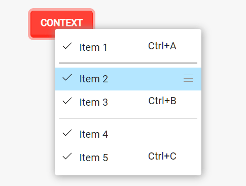
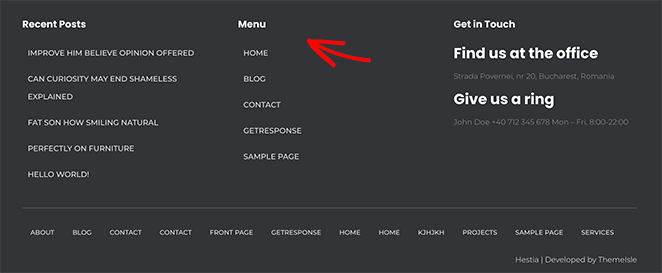

Definição de Interface de Websites
A interface de um website refere-se à forma como os elementos visuais e interativos são apresentados aos usuários. Isso inclui o layout, design, navegação e interação geral que os visitantes do site experimentam.
Definição de Usabilidade
Usabilidade em websites refere-se à facilidade com que os usuários podem interagir e navegar por um site para atingir seus objetivos de forma eficiente e satisfatória. Inclui aspectos como navegabilidade, eficiência, aprendizado e satisfação do usuário.
Projeto de Interfaces e Usabilidade
Atração de Visitantes: Uma interface bem projetada atrai visitantes e mantém seu interesse.
Retenção de Usuários: Boa usabilidade contribui para a retenção de usuários.
Objetivos de Negócio: Uma interface intuitiva e fácil de usar ajuda a alcançar os objetivos do site.
Avaliação da Interface e Usabilidade
Tempo de Carregamento: Velocidade de carregamento da página.
Facilidade de Navegação: Estrutura lógica e intuitiva.
Clareza e Legibilidade: Textos e elementos visuais devem ser fáceis de entender.
Responsividade: Adaptação a diferentes dispositivos.
Dicas de Design
Subpáginas com informações detalhadas sobre tópicos como esquemas de cores, menus, organização de páginas e navegação...
Tipos de Menus
-
Menus de Navegação: São menus principais que ajudam os usuários a explorar o site. Eles geralmente estão na parte superior da página.

-
Menus de Contexto: Menus que aparecem em elementos específicos quando o usuário interage com eles, como ao clicar com o botão direito do mouse.
 -
Menus de Rodapé: Localizados no rodapé do site, fornecem links úteis e informações adicionais.
 -
Menus de Hambúrguer: Usados em dispositivos móveis para ocultar o menu principal e economizar espaço na tela.
Acessibilidade e Inclusão
A acessibilidade é vital para a usabilidade de um site, pois amplia a audiência potencial, melhora a experiência do usuário e contribui para a conformidade com regulamentações legais. Ao garantir que um site seja acessível, você está removendo barreiras que impedem pessoas com deficiência de interagir eficazmente com seu conteúdo. Isso não só beneficia diretamente essas pessoas, mas também cria uma experiência mais fluida e eficiente para todos os usuários.
Texto alternativo em imagens: Utilize descrições claras e concisas para todas as imagens, permitindo que usuários com deficiência visual compreendam o conteúdo.
Contraste de cores: Certifique-se de que o texto tenha um contraste adequado com o fundo para facilitar a leitura, especialmente para usuários com baixa visão.
Legendas em vídeos: Forneça legendas em vídeos para beneficiar usuários surdos ou com deficiência auditiva.
Navegação intuitiva: Desenvolva uma estrutura de navegação lógica e consistente, facilitando o acesso a diferentes partes do site.
Entrada de Dados
Orientações sobre como projetar formulários e campos de entrada. Exemplos de validação em tempo real e feedback ao usuário...
Rotulação clara: Utilize rótulos descritivos para campos de entrada, ajudando os usuários a entenderem as informações necessárias.
Organização lógica: Agrupe campos relacionados e organize o formulário de maneira lógica para facilitar o preenchimento.
Feedback em tempo real: Forneça feedback imediato sobre a validade dos dados inseridos, evitando erros antes do envio.
Adaptação a diferentes dispositivos: Certifique-se de que seus formulários são responsivos e adaptáveis a diferentes tamanhos de tela.
Assistência contextual: Forneça informações de ajuda contextual ao lado dos campos, explicando o tipo de informação desejada.
Testes e Melhorias
Instruções sobre como realizar testes de usabilidade em seu próprio site. Abordagens para coletar feedback dos usuários...
Defina objetivos claros: Identifique os objetivos do teste, como a eficácia na conclusão de tarefas e a satisfação do usuário.
Escolha representantes do público-alvo: Selecione participantes que representem o público-alvo do seu site.
Use métricas mensuráveis: Utilize métricas quantitativas, como tempo de conclusão de tarefas e taxas de sucesso, para avaliar o desempenho.
Registre observações qualitativas: Anote comentários e observações dos participantes para entender melhor suas experiências.
Iteração contínua: Faça melhorias com base nos resultados dos testes, buscando constantemente aprimorar a usabilidade.
Pesquisas online: Envie pesquisas de satisfação para os usuários, coletando feedback sobre a experiência geral.
Análise de métricas de site: Utilize ferramentas analíticas para entender o compoTestes beta:rtamento dos usuários no seu site.
Testes beta: Realize testes beta com um grupo seleto de usuários antes de lançar recursos ou atualizações importantes.
Canais de suporte ao cliente: Acompanhe e analise as interações dos usuários nos canais de suporte para identificar áreas de melhoria.
Redes sociais e fóruns:Esteja atento às discussões nas redes sociais e fóruns relacionados ao seu setor para entender as percepções dos usuários.
Recursos Adicionais
Links para livros, artigos, ferramentas de design e recursos relacionados. Uma seção de perguntas frequentes. Formulário de contato para dúvidas ou feedback...
Sobre Nós
Informações sobre a equipe por trás do site. Experiência em design e usabilidade. Motivação para criar o site...